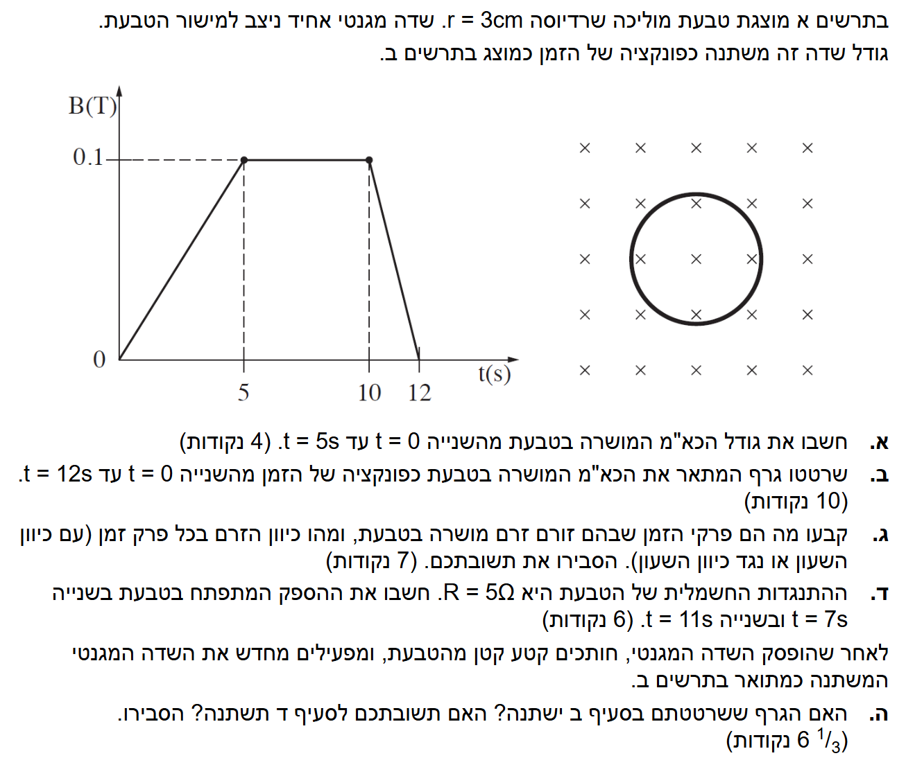

נרכז את הנתונים ונעביר אותם ליחידות המידה התקניות (MKS):
את גודל (הערך המוחלט) של הכא"מ (כוח אלקטרו-מניע) המושרה בטבעת, המסומן באות \( |\varepsilon| \).
נשתמש בחוק פארדיי לכא"מ מושרה, ובנוסחת השטף המגנטי ממשוואות האלקטרומגנטיות:
\(\varepsilon = -N\frac{d\Phi_B}{dt} \approx -N\frac{\Delta\Phi_B}{\Delta t}\) \(\Phi_B = BA\cos\alpha\) \(A = \pi r^2\)ראשית, נחשב את שטח הטבעת הכלוא בשדה:
כעת, נחשב את השינוי בשטף המגנטי \( \Delta \Phi_B \) בפרק הזמן הנתון. מכיוון שהשטח \( A \) והזווית \( \alpha \) קבועים, רק גודל השדה משתנה:
נציב הכל בחוק פארדיי לקבלת הכא"מ:
נקודה למחשבה: מדוע מותר לחשב לפי מרווח זמן רחב של 5 שניות?
בנוסחת חוק פארדיי המקורית, הכא"מ נקבע לפי הנגזרת של השטף בזמן (קצב השינוי הרגעי). עם זאת, מכיוון שגרף השדה המגנטי בין 0 ל-5 שניות הוא קו ישר, השיפוע שלו קבוע לכל אורך הדרך. במתמטיקה ובפיזיקה, כאשר הפונקציה ליניארית (קו ישר), קצב השינוי הממוצע שווה בדיוק לקצב השינוי הרגעי. לכן, מותר ומדויק לחלוטין לחשב כאן את השיפוע בעזרת \(\Delta\) על פני כל 5 השניות.
גודל הכא"מ המושרה הוא: \( |\varepsilon| = 5.65 \cdot 10^{-5} \text{ V} \)
עלינו להתייחס לשלושת מקטעי הזמן המוצגים בגרף המקורי \( B(t) \):
לסרטט גרף של \( \varepsilon(t) \) בין הזמנים \( t=0 \) ל- \( t=12\text{s} \).
בפרק זמן זה, השדה המגנטי קבוע ועומד על \( 0.1\text{ T} \). כלומר, אין כל שינוי בשדה המגנטי ולכן \( \Delta B = 0 \). מכיוון שהשדה לא משתנה, השטף המגנטי דרך הטבעת נותר קבוע, ולפי חוק פארדיי לא נוצר כא"מ מושרה:
בפרק זמן זה, השדה המגנטי קטן מ- \( 0.1\text{ T} \) לאפס. נפרק את החישוב לשלבים ברורים:
שלב 1: נחשב את השינוי בשדה המגנטי (\( \Delta B \)). נזכור ששינוי הוא תמיד מצב סופי פחות מצב התחלתי:
שלב 2: נזהה את משך הזמן שבו התרחש השינוי (\( \Delta t \)):
שלב 3: כעת נציב את כל הנתונים, יחד עם שטח הטבעת שחישבנו קודם לכן (\( A = 2.827 \cdot 10^{-3} \text{ m}^2 \)), בתוך חוק פארדיי:
נעגל את התוצאה ל-3 ספרות מהותיות כנדרש:
הגרף מורכב ממדרגות (פונקציות קבועות בכל מקטע) מכיוון שקצב השינוי של השדה (\( \Delta B/\Delta t \), שהוא שיפוע הגרף המקורי) הוא קבוע בכל מקטע.
הגרף מורכב ממדרגות אופקיות המשקפות את הכא"מ הקבוע בכל פרק זמן, כפי שמוצג בסרטוט.
ידוע לנו מערך הכא"מ בכל אחד מפרקי הזמן. כיוון השדה המגנטי המקורי הוא לתוך הדף (מסומן באיקסים \(\times\)).
באילו פרקי זמן זורם זרם מושרה ומהו כיוונו (עם/נגד כיוון השעון) עם הסבר.
חוק לנץ: הזרם המושרה במעגל ייצור שדה מגנטי שכיוונו מתנגד לשינוי בשטף המגנטי שיצר אותו.
זרם מושרה נוצר רק כאשר יש כא"מ שונה מאפס. מגרף הכא"מ שסרטטנו, יש זרם בפרקי הזמן \( 0-5\text{s} \) ו- \( 10-12\text{s} \).
זרם נגד כיוון השעון
זרם עם כיוון השעון
0-5 שניות: נגד כיוון השעון. 10-12 שניות: עם כיוון השעון.
את ההספק החשמלי \( P \) שמתפתח בטבעת בזמנים אלו.
מדף הנוסחאות, נוסחת ההספק והחוק של אוהם:
\(P = VI\) \(V = IR\)נציב את חוק אוהם בתוך נוסחת ההספק (כאשר הכא"מ \( \varepsilon \) מתפקד כמתח \( V \)):
\(P = \frac{\varepsilon^2}{R}\)עבור \( t=7\text{s} \):
עבור \( t=11\text{s} \) נשתמש בערך הכא"מ שחישבנו בסעיף הקודם (\( |\varepsilon| = 1.41 \cdot 10^{-4}\text{ V} \)):
ב- \( t=7\text{s} \) ההספק הוא: \( 0\text{ W} \). ב- \( t=11\text{s} \) ההספק הוא: \( 3.98 \cdot 10^{-9}\text{ W} \).
הטבעת נחתכה ולכן המעגל החשמלי הופך להיות "מעגל פתוח". השדה המגנטי מופעל מחדש בדיוק באותה צורה.
האם הגרף מסעיף ב' (כא"מ) ישתנה? האם תשובה ד' (הספק) תשתנה? ונדרש הסבר מילולי.
מעגל פתוח: ההתנגדות שואפת לאינסוף (\( R \to \infty \)), ולכן הזרם אפס (\( I = 0 \)).
הכא"מ המושרה (פארדיי): \( \varepsilon = -N\frac{\Delta\Phi_B}{\Delta t} \) אינו תלוי בזרם או בהתנגדות המעגל, אלא רק בשינוי השטף בסביבה הגיאומטרית.
לגבי סעיף ב': הגרף לא ישתנה. חוק פארדיי קובע ששינוי בשטף המגנטי יוצר שדה חשמלי מושרה (וכתוצאה מכך כא"מ) סביב המסלול הסגור במרחב, ללא קשר לשאלה האם יש שם חוט מוליך סגור לחלוטין או נתק. יווצר הפרש פוטנציאלים בין קצוות החיתוך שגודלו שווה בדיוק לכא"מ שחושב קודם לכן.
לגבי סעיף ד': התשובה תשתנה. מכיוון שהמעגל כעת פתוח, לא מתאפשרת זרימה של מטענים, כלומר הזרם הוא אפס (\( I = 0 \)). מכיוון שההספק הוא \( P = I^2R \), ההספק בכל נקודת זמן יהיה מעתה אפס.
הגרף מסעיף ב' לא ישתנה (יווצר מתח בקצוות החיתוך). התשובה לסעיף ד' תשתנה (ההספק יהיה אפס תמיד כי אין זרם במעגל פתוח).